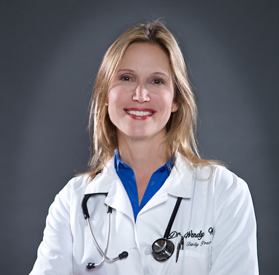

Full Family Practice
Primary care for the whole family, from children to seniors: checkups and physicals, everyday illness, ongoing care for chronic conditions, and preventive care.
Pismo Family Practice is the medical practice of Dr. Wendy Weiss, D.O., who has cared for patients of all ages on the Central Coast since 1995.

Dr. Weiss has been the physician at Pismo Family Practice since 1995. Over 31 years she has cared for generations of local families, and she leads a team of physician assistants, nurses, medical assistants and office staff.
As a Doctor of Osteopathic Medicine, Dr. Weiss is trained to look at the whole person, not just a list of symptoms. That means paying attention to how lifestyle, history and overall health fit together, and putting prevention first.
Dr. Weiss is a U.S. Army veteran who served in an Army Reserve medical unit. She is licensed to practice medicine in California and Montana and often trains others in the medical field.
Primary care for the whole family, from children to seniors: checkups and physicals, everyday illness, ongoing care for chronic conditions, and preventive care.
Physician-supervised detox and recovery support, handled with privacy and respect.
FAA medical exams for pilots, done locally so you can keep flying.
Physician care for patients recovering in convalescent and skilled nursing facilities.
Medical director oversight for home health care, helping patients receive quality care at home.
Laser treatments, injectables, body contouring and skin care through Dr. Weiss's aesthetic practice, Pismo Vitality.
Visit Pismo Vitality →Pismo Family Practice
575 Price Street, Suite 101
Pismo Beach, CA 93449
Get directions
Phone
(805) 773-0707
| Monday – Thursday | 8:00 am – 4:30 pm |
|---|---|
| Friday | 8:00 am – 3:00 pm |
| Saturday – Sunday | Closed |
For a medical emergency, call 911.